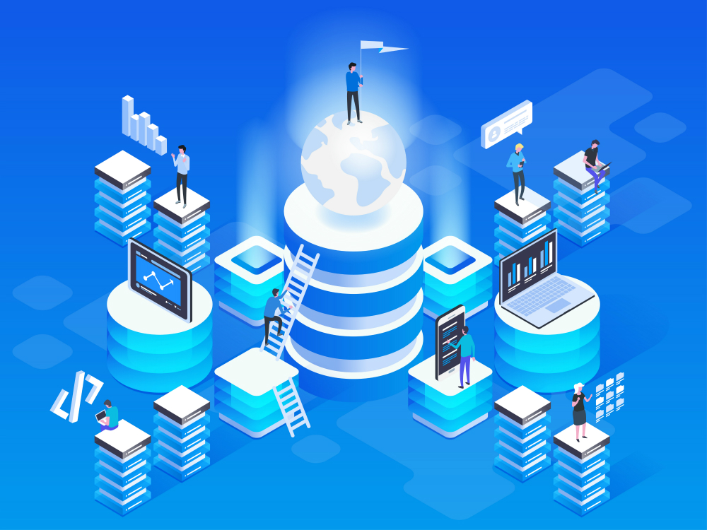

Информационные технологии (ИТ) играют ключевую роль в современном мире, формируя основу цифровой эпохи. Под ИТ понимается совокупность методов, процессов, программных средств и оборудования, которые обеспечивают сбор, обработку, хранение и передачу данных. Эти технологии используются во всех сферах человеческой деятельности: от образования и медицины до бизнеса и развлечений. В основе ИТ лежит стремление к автоматизации процессов и созданию удобных решений для повседневной жизни.
История ИТ начинается задолго до появления компьютеров. Первые шаги были сделаны с изобретением механических устройств для вычислений, таких как абак, и позднее — механических калькуляторов. В XVII-XVIII веках ученые разработали логарифмические таблицы и первые прототипы вычислительных машин, которые стали предвестниками современных компьютеров. Однако настоящая революция началась в XX веке, когда были созданы первые электронные компьютеры.
Эволюция ИТ тесно связана с развитием вычислительной техники. В 1940-х годах появились первые электронные вычислительные машины, такие как ENIAC, которые были огромными по размеру, но открыли двери в мир цифровых вычислений. В последующие десятилетия компьютеры становились всё более компактными, мощными и доступными. Появление персонального компьютера в 1980-х годах стало переломным моментом, позволив ИТ выйти за пределы крупных корпораций и стать частью повседневной жизни.
Одним из важнейших этапов в истории ИТ стало создание Интернета. Изначально разработанный для военных и научных целей в 1960-х годах, Интернет стал массовым явлением в 1990-х годах. Он изменил способ, которым люди взаимодействуют, работают, учатся и развлекаются. Сегодня Интернет связывает миллиарды устройств по всему миру, обеспечивая доступ к информации и услугам в реальном времени.
ИТ продолжают стремительно развиваться, затрагивая такие области, как искусственный интеллект, облачные технологии и анализ больших данных. Искусственный интеллект (AI) позволяет создавать умные системы, которые способны анализировать информацию, обучаться и принимать решения. Облачные технологии обеспечивают доступ к данным и приложениям из любой точки мира, а большие данные (Big Data) позволяют анализировать огромные объемы информации для принятия стратегических решений.
Влияние информационных технологий на общество огромно. Они обеспечивают новые возможности для коммуникации, обучения и инноваций, но одновременно поднимают важные вопросы, связанные с безопасностью данных, конфиденциальностью и цифровым неравенством. История ИТ — это история человеческого стремления к упрощению жизни, и этот процесс, несомненно, продолжится в будущем, открывая новые горизонты для человечества.
